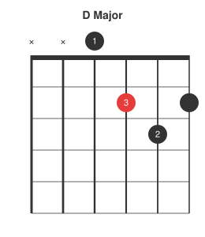
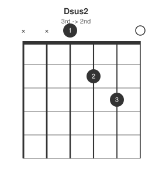
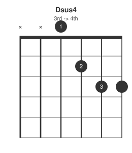
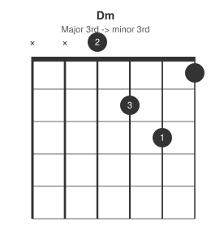
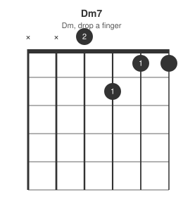
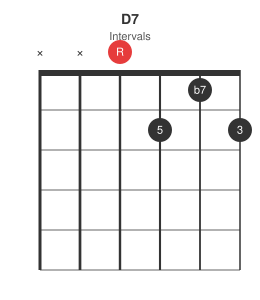
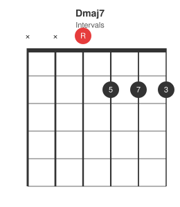
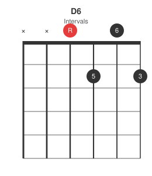

D major only uses four strings, which makes it the easiest open shape to hear a single finger move clearly against the others. This post works through the same set of variations as the A-shape post, applied to D.
Base shape: D major

Suspended: sus2 and sus4


Both suspensions here move only the top string, the string carrying the third in the base shape -- the clearest possible illustration of what "suspended" means.
Minor and minor seventh


Dominant seventh and major seventh


D7 is the shape most players learn first for a dominant chord -- useful as the V in a blues in G (see the 12-bar blues post).
Sixth and add9

D6 lifts the third's neighbour to add the sixth. Dadd9's most common open voicing shares fingering with Dsus2 -- the difference on paper is whether the third from a lower voicing is implied by the bass notes ringing under it in a full mix.
Summary table
| Chord | Frets (low to high) | Change from D major |
|---|---|---|
| D | xx0232 | base shape |
| Dsus2 | xx0230 | remove 3rd |
| Dsus4 | xx0233 | 3rd -> 4th |
| Dm | xx0231 | major 3rd -> minor 3rd |
| Dm7 | xx0211 | Dm, drop a finger |
| D7 | xx0212 | add b7 |
| Dmaj7 | xx0222 | add maj7 |
| D6 | xx0202 | add 6th |
| Dadd9 | xx0230 | add 9th |
Next in the series: the E-shape open chord variations.